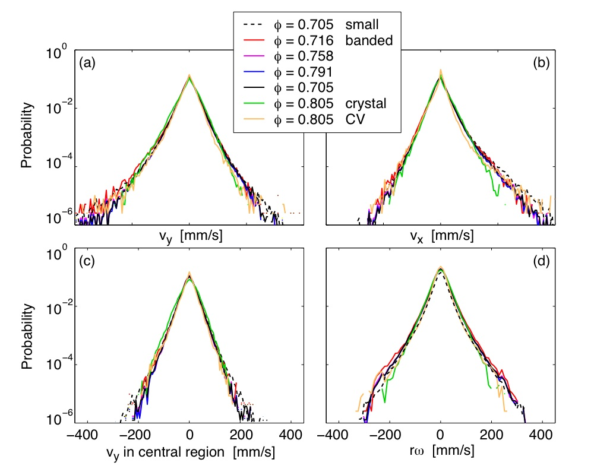
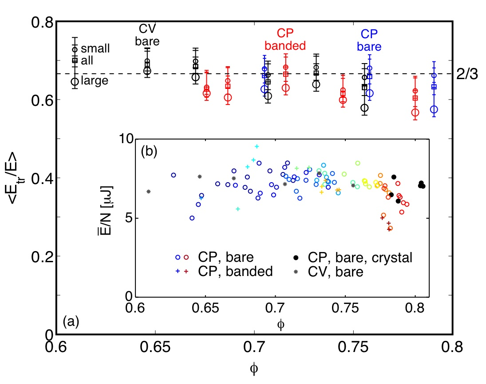

Do air hockey pucks behave like air molecules?
|
Temperature is a cool concept. There are several ways to define it, which, for
molecular systems in equilibrium, are all amazingly equivalent: you can measure the average kinetic energy of the
particles; you can measure the mean square displacement of the particles as a function of time (as
in Brownian motion); and, you can measure the rate of change of the entropy with respect
to the energy of the system. Measuring entropy (the amount of disorder in a system)? Doing
this in a granular system is extremely difficult (ie impossible for large numbers of particles)
because it requires describing all the possible velocity states and spatial packings.
But what about the first two ways of measuring the "temperature" of a granular system, where the particles lose energy due to friction? Are these measures of temperature still equivalent? Is the system even in equilibrium? |

|
Here are ~150 air hockey pucks viewed from above with a high-speed camera.
The edges of the pucks are visible, as well as a series of twelve dots which label each
puck distinctly. The pucks are two different sizes - pucks that are the same size like to
crystallize. The white bar to the right is a piston, which also floats on the air table.
A series of electromagnetic bumpers along the edge of the table pop in and out, colliding with
nearby pucks. The camera takes several photos every second, enough to determine the velocities of
all the pucks. Simple image segmentation allows the position of each particle to be determined
automatically in every frame of the resulting movie.
In 2010, I went all the way from the Netherlands to the Nonlinear Lab at NC State University to play with their air hockey table. Do the air hockey pucks, which dissipate energy through friction when they collide with each other, otherwise behave like air molecules? |
| In an ideal gas - and to a
very good approximation in real molecular gases - the velocity
of the particles is normally distributed. One consequence of this is that the
temperature of the gas proportional to the average kinetic energy of the molecules.
My collaborators and I measured the translational (vx, vy) and rotational (ω) velocities of the pucks. We changed the density (φ) of the pucks on the table; we created a constant pressure (CP) state by allowing the piston to move; we created a constant volume (CV) state by fixing the piston; we used only one size of pucks so that the system would try to crystallize; and we put elastic bands on the outside of the pucks to change the moment of inertia and coefficients of friction and restitution. Surprise! The velocity distributions don't change! The velocity distributions are exponentially distributed, rather than normally distributed as in an ideal gas. Lots of other people observe exponential velocity distributions in granular gases. I don't know if there is a profound reason why this should be the case, but it seems to me that there should be a profound reason. |
 |
|  |
When a system is in equilibrium the entropy, or amount
of disorder is maximized. One consequence of this obligation is
equipartition: gas molecules in equilibrium divide their energy equally between each degree of freedom.
A gas of dumb-bell shaped molecules has 3 translational and two rotational degree of freedom,
while the air hockey pucks have two translational and one rotational degree of freedom. Do the
pucks divide their energy equally between each of the three degrees of freedom?
Surprisingly, yes - the air hockey pucks do to divide energy between the two translational and one rotational degree of freedom. In order for this to be the case, the large particles have slightly less energy than the small particles, but the average ratio of translational energy to total energy for all the pucks is close to 2/3. Even though the system is gaining energy (from the bumpers along the edge of the table) and losing energy (through sound and friction), it still exhibits equipartition, which suggests that the entropy of the system is maximal and that the system is in equilibrium. Perhaps we can measure the "temperature" of the air hockey pucks! |